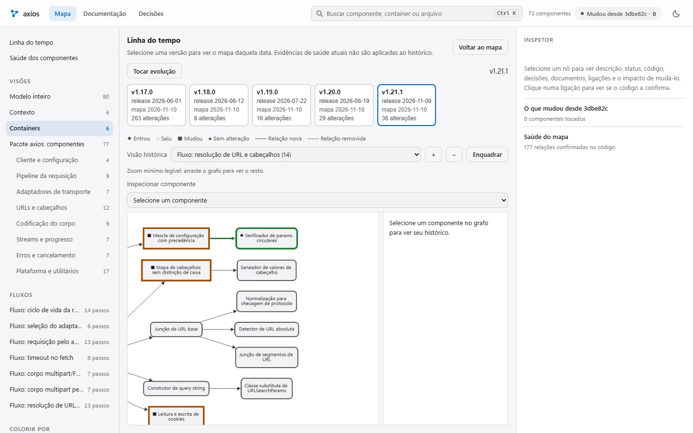
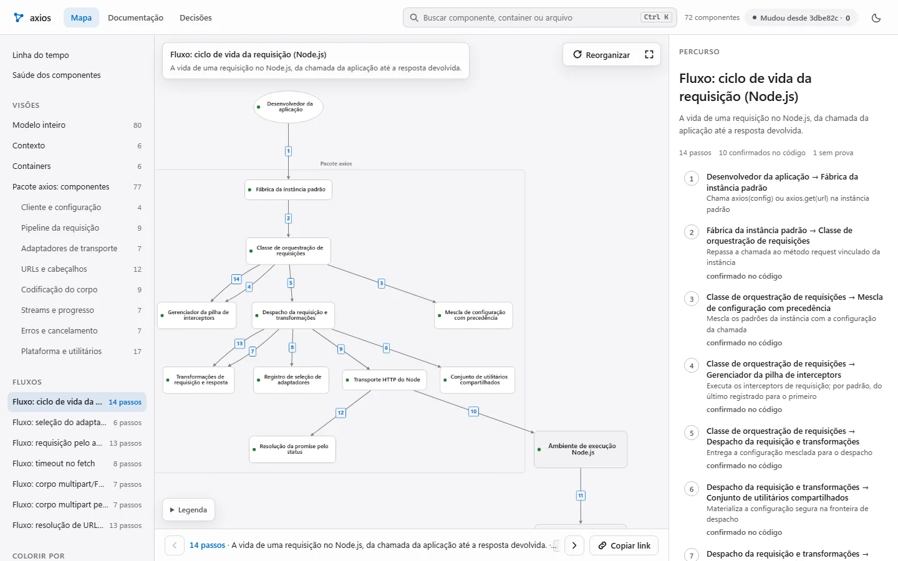
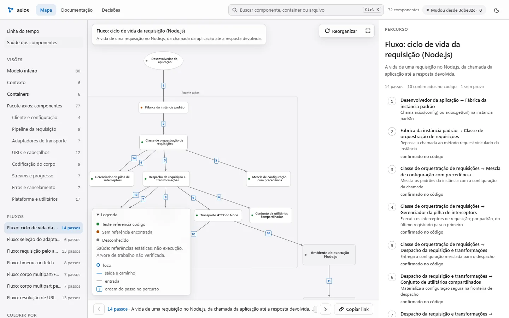

Lodemap
O mapa e a documentação do projeto. Funciona sozinho, sem servidor. O CodeGraph é uma integração opcional. Esta página.
Um mapa C4 no seu repositório, com fluxos animados e conferido por teste.
Lodemapvídeo · 48 s
Os 14 passos de uma requisição do axios, as cinco releases e o teste que falha quando o mapa fica para trás. Gravado do mapa real do axios v1.21.1. O dado de 58% é de Xia et al., IEEE TSE, 2018.
Sem narração; todo o texto está na tela.
Por que os totais diferem? No modelo do axios há 72 componentes e 188 relações entre eles (177 confirmadas por análise estática e 11 só no modelo). O grafo 3D do vídeo inclui também elementos externos ao código (o modelo tem 5 sistemas externos: 72 + 5 = 77), por isso mostra 77 nós e 194 ligações: são outra contagem, não a do modelo.
Mapa do axios: 72 componentes reais em 8 áreas, ligados por 188 relações do código. Cada ponto é um componente. O campo ocupa a tela inteira, os pontos derivam devagar e pulsos de luz percorrem as relações do ciclo de vida da requisição; passe o cursor sobre um ponto para ver o nome e clique para abri-lo no explorador da demo.
O Lodemap transforma o seu repositório num fluxograma vivo: quem conversa com quem, por onde passa cada fluxo e o que mudou em cada versão. Scripts geram as páginas, e testes apontam módulos do código que ficaram fora do mapa. Cada ponto acima é um componente real do axios.
Fluxo real · mapa do axios
Oito componentes e sete relações do mapa, em português, numerados na ordem de entrada no fluxo. Na demo, esse fluxo tem 14 passos.
lib/axios.jslib/core/Axios.jslib/core/mergeConfig.jscore/InterceptorManager.jscore/dispatchRequest.jscore/transformData.jslib/adapters/http.jslib/core/settle.jsComo funciona · Skill do Claude Code · Open source · MIT · Python 3.11+ e git
Structurizr DSL: componentes por área, relações nomeadas e fluxos.
Explorador, leitor e docs. No axios: 17 s e 0 chamadas de modelo sem mudança estrutural.
Falha quando um módulo do código fica fora do modelo.
Cada versão do mapa é comparada com a anterior. Mais abaixo estão as cinco.
Quatro dores que todo time que herda um sistema reconhece.
Times herdam sistemas que ninguém consegue explicar inteiro. A documentação é escrita uma vez e envelhece no merge seguinte; pedir a um modelo para “documentar tudo” consome muitas chamadas e não garante que o texto bate com o código.
Desenhados à mão uma vez, nunca mais conferidos contra o código.
A estrutura se move a cada versão, mas o que entrou, saiu ou foi alterado só aparece lendo o diff inteiro.
Quem chega precisa descobrir sozinho por onde o pedido passa.
“Pronto” e “em andamento” sem arquivo nem commit que sustentem; números citados sem origem.
Mapa do axios por versão: os componentes novos aparecem preenchidos e com o nome; os alterados têm contorno grosso; as relações novas ficam em traço forte.
Fig. 02 · Linha do tempo · histórico calculado a partir das versões do mapa no git
A linha do tempo compara identificadores estáveis do mapa entre cinco releases auditadas. Selecione uma versão, toque a evolução e consulte o histórico de um componente. Role para ver o mapa do axios mudar.
5 releases auditadas · axios v1.17.0 a v1.21.1
Explorar a linha do tempo →v1.17.0Mapa inicial · 65 componentes
v1.18.0Nenhum componente novo
v1.19.0Novos: Cabeçalhos de FormData; Acesso ao Buffer do Node
v1.20.0Novos: Lista compartilhada de métodos HTTP; Normalização para checagem de protocolo
v1.21.1Novos: Verificador de params circulares; Montador de corpo multipart em Blob; Serializador de FormData em Blob multipart

Uma fonte de verdade no repositório e as saídas geradas a partir dela. Tudo roda local, sem servidor.
O modelo de arquitetura mora no seu repositório, em Structurizr DSL. As páginas são geradas a partir desse modelo.
Navegue por visões, percorra fluxos e inspecione as relações e os caminhos de código de cada componente.
explorador/index.html
Referências estáticas de testes, cobertura, histórico git e relatórios JUnit quando disponíveis. Ausência de dados é mostrada como desconhecida; referência a teste não comprova execução.
explorador · saúdeDocumentação com busca, diagramas e decisões registradas. O relatório de evolução apresenta as alterações por versão.
leitor/index.htmlCada número ligado a um componente aponta o arquivo e o commit de onde saiu. Um teste confere se a fonte ainda existe.
metricas/metricas.jsonUm pytest que falha quando algum módulo do código fica fora do modelo. O mapa não envelhece em silêncio: o CI avisa.
tests/test_arquitetura_cobertura.pySistema, containers, componentes por área, relações nomeadas, visões e fluxos dinâmicos. Cada componente tem status: pronto, em andamento, aguardando, planejado ou fora do foco.
workspace.dsl · model/ · views/# model/componentes-api.dsl (exemplo) group "Roteamento" { roteador = component "Roteador" "Escolhe o agente" { properties { "status" "Em andamento" "codigo" "app/roteador.py" } } } roteador -> fila "Publica a tarefa"
O teste de cobertura e o gate de qualidade existem para o mapa não ficar para trás. São a garantia, não a promessa principal.
No mapa auditado do axios v1.21.1, o gate confere estrutura e caminhos. A demo mostra referências estáticas de testes; sem relatório de execução, o resultado é desconhecido.
Gate · axios v1.21.1 · fonte AST
Medição estrutural local. Não substitui testes executados nem garante descrições verdadeiras.

A linha de base pública é o exemplo do axios: references/baseline-qualidade.json e references/gate-qualidade.md. O gate mede propriedades estruturais; não garante que descrições sejam verdadeiras.
Para quem é cada ferramenta e que pergunta ela responde. O Lodemap lê o CodeGraph (codegraph_ponte.py).
CodeGraph e Graphiti são boas ferramentas, e servem a outro trabalho. O Lodemap usa o primeiro como fonte opcional de relações, com 0 tokens.
| Critério | Lodemap | CodeGraph | Graphiti |
|---|---|---|---|
| Para quem | Pessoas e agentes que precisam entender a arquitetura do repositório | Agentes de código que consultam símbolos, chamadas e impacto | Agentes que precisam de memória de longo prazo |
| Responde | Quem conversa com quem, por onde passa cada fluxo, o status declarado e o que mudou | Onde está um símbolo, quem o chama e o que uma edição afeta | O que o agente sabe e desde quando cada fato vale |
| Mantido por | Scripts geram as páginas; testes apontam módulos fora do mapa; a modelagem depende das mudanças e decisões do projeto | Índice atualizado pelo observador de arquivos | Episódios gravados pelo agente e extraídos por modelo |
| Mostra a evolução | Compara versões do mapa no git; cinco releases auditadas na demo (FIG. 02) | Reflete o estado atual do código | Guarda o histórico dos fatos (valid_at e invalid_at); não desenha a arquitetura |
As colunas CodeGraph e Graphiti resumem a descrição que cada ferramenta publica em seu servidor MCP, lida em 10/11/2026; confira nos projetos antes de decidir. A coluna Lodemap vem da página do projeto.
Resposta a uma objeção: manter o mapa vivo precisa caber em poucas chamadas. Medido uma vez, em 09/11/2026.
As barras mostram chamadas registradas em rodadas históricas, não uma previsão para modelos novos.
51 = 50 de Sonnet + 1 de Haiku; 20 = 19 + 1. Somas feitas a partir dos números da página do projeto. Nenhuma chamada passou de 100 mil tokens de contexto (pico de 97 mil).
Palavra por palavra. Uma mudou: o módulo de cookies, que ganhou suporte à Cookie Store API naquela versão.
Em 5 pares de versões, 78 arquivos alterados pediram 32 revisões: só reabre o módulo cuja superfície pública mudou.
Contra 129.385 de um subagente com a mesma nota (96,9; intervalo de 95%: 92,7 a 98,7).
Ganho para pessoas: não medido ainda. A economia de tokens para agentes não foi demonstrada (FIG. 08). Esta seção mostra só chamadas, tempo e tokens medidos.
Requer Python 3.11+ e git. O instalador mostra cada mudança, guarda cópia de tudo que toca e desfaz byte a byte.
# versão 0.1.0 no repositório · licença MIT git clone https://github.com/skarL007/lodemap && cd lodemap python -m lodemap instalar --perfil padrao # simulação: só mostra python -m lodemap instalar --perfil padrao --aplicar # aplica, com backup e manifesto
python -m lodemap plano --repo . # 0 tokens: módulos, tempo, arquivos python -m lodemap consentir --repo . --escopos gerar,modelo python -m lodemap reverter # desfaz a última instalação
O sinal − é o que o Lodemap ainda não faz ou não provou. O + é o que está pronto e foi medido.
Família de projetos
O mapa e a documentação do projeto. Funciona sozinho, sem servidor. O CodeGraph é uma integração opcional. Esta página.
Servidor MCP e hooks em Rust para o Claude Code: freio antes da execução, lições só com aprovação e números com origem.
Memória de projeto para agentes, em Rust, com firewall antes da execução, agentes padrão e telemetria honesta. Em desenvolvimento.
A versão 0.1.0 está no repositório e o código é aberto (MIT). Abra a demo ao vivo ou fale comigo para testar no seu código.